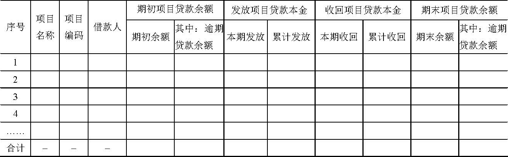

财政部
关于印发《利用住房公积金发放保障性住房建设项目贷款相关业务会计核算办法》的通知
财会〔2010〕18号
住房城乡建设部，有关省、自治区、直辖市、计划单列市财政厅（局）：
为规范有关利用住房公积金发放保障性住房建设项目贷款试点城市住房公积金支持保障性住房建设资金核算，根据住房城乡建设部、财政部、国家发展改革委、中国人民银行、监察部、审计署、银监会联合印发的《关于利用住房公积金贷款支持保障性住房建设试点工作的实施意见》（建金〔2009〕160号）的规定，我们制定了《利用住房公积金发放保障性住房建设项目贷款相关业务会计核算办法》，现印发给你们，请转发相关住房公积金管理中心遵照执行。
附件：利用住房公积金发放保障性住房建设项目贷款相关业务会计核算办法
财政部
2010年9月27日
附件：
利用住房公积金发放保障性住房建设项目贷款相关业务会计核算办法
一、总说明
（一）为了规范有关利用住房公积金发放保障性住房建设项目贷款（以下简称建设项目贷款）试点城市住房公积金支持保障性住房建设资金核算，保证会计信息的真实、完整，根据《住房公积金会计核算办法》（财会字〔1999〕33号）、《关于利用住房公积金贷款支持保障性住房建设试点工作的实施意见》（建金〔2009〕160号）和《利用住房公积金发放保障性住房建设贷款财务管理办法》（财综〔2010〕12号）等相关法规，制定本办法。
（二）本办法适用于《关于做好利用住房公积金贷款支持保障性住房建设试点工作的通知》（建金〔2010〕100号）规定的28个建设项目贷款试点城市住房公积金管理中心管理的住房公积金。
（三）本办法规定《住房公积金会计核算办法》（财会字〔1999〕33号）中涉及建设项目贷款业务的相关会计科目下分别按照建设项目贷款业务和在受托银行办理住房公积金个人住房贷款（以下简称个人住房贷款）业务增设相关明细科目。其中，对于个人住房贷款业务相关明细科目会计处理沿用《住房公积金会计核算办法》相关规定，对于建设项目贷款业务相关明细科目会计处理遵照本办法规定。
（四）本办法由财政部负责解释。
（五）本办法自发布之日起施行。
二、会计科目的修订
（一）第121号科目 委托贷款
1.科目设置及核算内容
本科目下设置“个人贷款”和“项目贷款”两个一级明细科目，分别核算按照规定在受托银行办理住房公积金个人住房贷款（以下简称个人住房贷款）和利用住房公积金发放的保障性住房建设项目贷款（以下简称建设项目贷款）的款项。其中，“个人贷款”一级明细科目按照借款人设置明细账，进行明细核算；“项目贷款”一级明细科目按照建设项目贷款借款人设置明细账，进行明细核算。
2.主要账务处理
（1）按规定发放建设项目贷款时，借记本科目（项目贷款），贷记“住房公积金存款”科目；收回住房公积金贷款时，按本息合计金额，借记“住房公积金存款”科目，按本金，贷记本科目（项目贷款），按已计利息，贷记“应收利息”科目，按未计利息，贷记“业务收入”科目。
（2）对于借款合同约定到期未归还的建设项目贷款，应转作逾期贷款处理，自本科目转入“逾期贷款”科目，借记“逾期贷款”科目，贷记本科目（项目贷款）。
（3）对借款人申请建设项目贷款提供的抵押物，应建立备查簿，详细登记抵押担保情况。
（二）第122号科目 逾期贷款
1.科目设置及核算内容
本科目下设置“个人逾期贷款”和“项目逾期贷款”两个一级明细科目，核算借款合同约定到期未归还的委托贷款。其中，“个人逾期贷款”一级明细科目按照借款人设置明细账，进行明细核算；“项目逾期贷款”一级明细科目按照建设项目贷款借款人设置明细账，进行明细核算。
2.主要账务处理
（1）对于借款合同约定到期未归还的建设项目贷款，应转作逾期贷款处理，按照建设项目贷款金额，借记本科目（项目逾期贷款——XX借款人——本金），贷记“委托贷款”科目；按照已计提的应收利息金额，借记本科目（项目逾期贷款——XX借款人——应收利息），贷记“应收利息”科目。建设项目贷款转入逾期贷款后，不计提孳生的逾期利息和罚息，但应当设置备查簿登记逾期贷款利息和罚息的借款人、计息时间、金额和性质等相关信息。
收回逾期贷款的还款时，应首先冲减本金，按收回的金额，借记“住房公积金存款”科目，贷记本科目（项目逾期贷款——XX借款人——本金）；本金全部收回后，收到的还款冲减逾期前已计未收利息，借记“住房公积金存款”科目，贷记本科目（项目逾期贷款——XX借款人——应收利息）；逾期前已计未收利息收回后的还款作为逾期后的未计利息和罚息确认为当期业务收入，借记“住房公积金存款”科目，贷记“业务收入”科目。
（2）按规定程序经批准核销的住房公积金呆账贷款，冲销提取的贷款风险准备时，借记“贷款风险准备”科目，贷记本科目（项目逾期贷款——XX借款人）；同时，借记“住房公积金存款”科目，贷记“增值收益存款”科目。核销后贷款又收回的，按收回的建设项目贷款本息合计金额，借记“住房公积金存款”科目，贷记“贷款风险准备”科目；同时，借记“增值收益存款”科目，贷记“住房公积金存款”科目。
（三）第301号科目 贷款风险准备
1.科目设置及核算内容
本科目下设置“个人贷款风险准备”和“项目贷款风险准备”两个一级明细科目，分别核算按规定提取的个人住房贷款和建设项目贷款风险准备。
2.主要账务处理
（1）年度终了，应按规定对建设项目贷款提取风险准备。提取贷款风险准备时，借记“增值收益分配”科目，贷记本科目（项目贷款风险准备）。
（2）对确实无法收回的逾期贷款，按规定程序经批准作为呆账的，冲销提取的贷款风险准备，借记本科目（项目贷款风险准备），贷记“逾期贷款”科目；同时，借记“住房公积金存款”科目，贷记“增值收益存款”科目。已确认并转销的呆账贷款，如果以后又收回的，按实际收回的本金和利息，借记“住房公积金存款”科目，贷记本科目（项目贷款风险准备）；同时，借记“增值收益存款”科目，贷记“住房公积金存款”科目。
（四）第321号科目 增值收益分配
1.科目设置及核算内容
本科目“提取贷款风险准备”一级明细科目下设置“提取个人贷款风险准备”和“提取项目贷款风险准备”两个二级明细科目，分别核算按有关标准提取的、从增值收益中列支的个人住房贷款风险准备和建设项目贷款风险准备。
2.主要账务处理
按规定标准提取建设项目贷款风险准备时，借记本科目（提取贷款风险准备——提取项目贷款风险准备），贷记“贷款风险准备”科目。
（五）第401号科目 业务收入
1.科目设置及核算内容
（1）本科目“委托贷款利息收入”一级明细科目下增设“个人贷款利息收入”和“项目贷款利息收入”两个二级明细科目，分别核算发放个人住房贷款和建设项目贷款取得的利息收入。
（2）本科目“其他收入”一级明细科目下设置“个人贷款逾期罚息收入”和“项目贷款逾期罚息收入”两个二级明细科目，分别核算发放的个人住房贷款和建设项目贷款逾期罚息收入。
2.主要账务处理
（1）期末，按计算的当期由建设项目贷款形成的应收未收委托贷款利息金额，借记“应收利息”科目，贷记本科目（委托贷款利息收入——项目贷款利息收入）。收回建设项目贷款，按本息合计金额，借记“住房公积金存款”科目，按本金，贷记“委托贷款”科目，按已计利息，贷记“应收利息”科目，按未计利息，贷记本科目（委托贷款利息收入——项目贷款利息收入）。
（2）对于建设项目贷款的逾期利息和罚息收入，应当在收到时，按收到的利息和罚息金额，借记“住房公积金存款”科目，贷记本科目（其他收入——项目贷款逾期罚息收入）。
（六）第411号科目 业务支出
1.科目设置及核算内容
（1）本科目“委托贷款手续费支出”一级明细科目下设置“个人贷款手续费支出”和“项目贷款手续费支出”两个二级明细科目，分别核算公积金中心委托银行发放个人住房贷款和建设项目贷款支付的手续费支出。
（2）本科目下设置“项目贷款其他支出”一级明细科目，核算建设项目贷款发生的评估费、诉讼费等费用。
2.主要账务处理
（1）按照规定支付给委托银行发放建设项目贷款的手续费金额，借记本科目（委托贷款手续费支出——项目贷款手续费支出），贷记“住房公积金存款”科目。
（2）支付建设项目贷款发生的评估费、诉讼费等费用时，按照实际支付金额，借记本科目（项目贷款其他支出），贷记“住房公积金存款”科目。其中，评估工作应委托通过公开招投标等方式确定的具有专业资质和相关经验的中介机构完成，发生的评估费支出须经同级财政部门审核批准。
三、建设项目贷款情况表
（一）报表样式
增加《住房公积金支持保障性住房建设项目贷款情况表》（会住房01表附表1），样式如下（见下页）：
住房公积金支持保障性住房建设项目贷款情况表
| 编制单位： | ＿＿＿＿年第＿＿季度 | 会住房01表附表1
单位：元 |
|

|
（二）编制说明
1.本表按季度和年度报送，反映建设项目贷款本季发放、本金收回和贷款余额等情况。年度报表中应当将本表中的“＿＿＿＿年第＿＿季度”改为“＿＿＿＿年度”。
2.本表各项目的内容和填列方法：
（1）“项目名称”和“项目编码”项目，反映建设项目的具体名称和编码。本项目应根据《关于做好利用住房公积金贷款支持保障性住房建设试点工作的通知》填列。
（2）“借款人”项目，反映建设项目的借款方。本项目应根据《住房公积金支持保障性住房建设项目借款合同》填列。
（3）“期初项目贷款余额”项目，反映截至本期期初已发放但尚未收回的建设项目贷款（包括项目逾期贷款）余额情况。本项目中“期初余额”栏目按照“委托贷款——项目贷款”科目期初借方余额和“逾期贷款——项目逾期贷款（本金）”科目期初借方余额合计分析填列；“其中：逾期贷款余额”栏目按照“逾期贷款——项目逾期贷款（本金）”科目本期期初借方余额填列。
（4）“发放项目贷款本金”项目，反映建设项目贷款本金的发放情况。其中，“累计发放”是指按照建设项目历年累计发放金额。本项目中“本期发放”栏目按照“委托贷款——项目贷款”科目本期借方发生额填列，“累计发放”栏目按照“委托贷款——项目贷款”科目各项目历年借方发生额分析填列。
（5）“收回项目贷款本金”项目，反映建设项目贷款本金的回收情况。其中，“累计收回”是指按照建设项目历年累计收回金额。本项目中“本期收回”栏目按照“委托贷款——项目贷款”科目和“逾期贷款——项目逾期贷款（本金）”科目本期贷方发生额分析填列；“累计收回”栏目按照“委托贷款——项目贷款”科目和“逾期贷款——项目逾期贷款（本金）”科目各建设项目贷款（项目逾期贷款）历年贷方发生额分析填列。
（6）“期末项目贷款余额”反映截至本期期末已发放但尚未收回的建设项目贷款（包括项目逾期贷款）余额情况。本项目中“期末余额”栏目按照“委托贷款——项目贷款”科目和“逾期贷款——项目逾期贷款（本金）”科目各建设项目贷款（项目逾期贷款）本期借方余额分析填列；“其中：逾期贷款余额”栏目按照“逾期贷款——项目逾期贷款（本金）”科目本期期末借方余额填列。